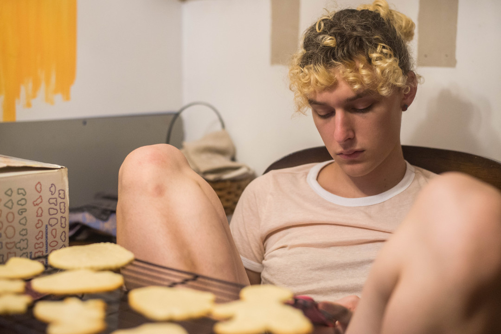
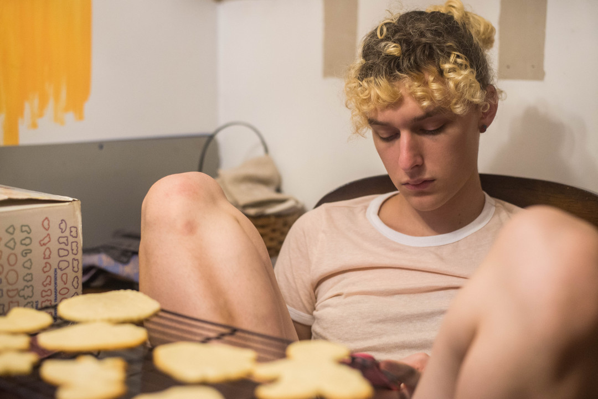

What Does Your Queerness Mean To You?
queerness means imagining the world i want to live in <3
my future
shiiiiit I just like myself a lot more now and that’s good enough for me
fluid
feeling like a weirdo a lot but then sometimes feeling fully held by my pals and communities and it’s amazing
listening to my vagina, not society
my queerness means healing, means breathing easier, means being held and holding myself, means "shiver down my spine" kisses, means actually liking sex and not having to fake it, means getting to know my body for the first time, means limitless, means love and love and love every day
it means i'm not boring as hell thank god
queerness is simultaneously being me, and knowing that I will never be defined
liberation
tact
queerness means not letting cissexist binary gender dictate the way I interact with my friends, chosen family, the people I kiss, and the people I fuck. Queerness helps me know that those categories are not mutually exclusive. queerness is a constant becoming—becoming what? dunno yet. but i feel like i am on my way somewhere, somewhere beyond the structures that have told us how to position our bodies thus far.
having the freedom and confidence to portray myself any way i want every single day of the week! it's a new confidence, but i like how it feels, and i think i wear it well :)
my queerness is not telling anyone about it because I didn't want to give anyone the satisfaction of saying "I already know."
being queer is two diet cokes, 10 flavor ices, and a night in by myself because they only wanted the popular gay at the party.
agency over my desires
thinking that once I came out I could finally be like the gay guys in the movies I'd watch at 1am when I thought my parents wouldn't find out, but then finding out that I am too yellow to be like them
in recent weeks, being queer means i can finally wear a rainbow pin on my backpack instead of pretending to be straight as i did at home every day
friendship, coming out to someone in diesel cafe, love, ina garten, fighting with my parents, reimagining community, yelling at my professors about gender over email, resistance, calling everyone daddy, finding ways to feel good in my body, demi lovato's "cool for the summer," timtums, tweeting too much, drama, remembering those who came before us, the word "binch," wearing a dress and feeling both beautiful and unsafe, dolly parton
resisting definition and rejecting normalcy


{kind=link}
{kind=link}